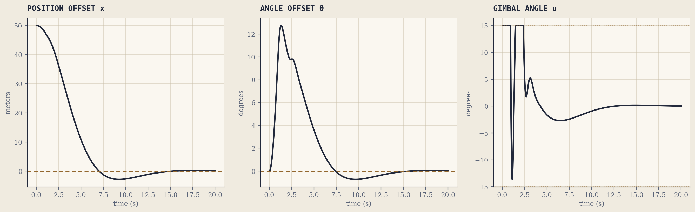

Sheet 03 / 04
Systems Analysis & Control
Self-Landing Rocket
Northeastern University — with Steven Carswell & Arjun Sivagaminathan

Part I — Modeling
The rocket's dimensions and control signals: angle θ, gimbal angle u, lateral position x, and wind speed w.
Download full PDF ↓
Part II — Control Design
Closed-loop landing response, recreated from the report's transfer functions and controller gains (Kp = 19, Kd = 4, K = −0.28).
Download full PDF ↓Overview
For a Systems Analysis & Control project, 2 partners and I modeled and controlled the landing of a Falcon 9–style first-stage booster. We derived the rocket's nonlinear equations of motion by relating its lateral position x, tilt angle θ, and engine gimbal angle u, with wind speed w acting as a disturbance. We then linearized the system and designed a controller using successive loop closure and tuned the gains for the inner and outer loops with MATLAB and Simulink. The final closed-loop design drove a 50-meter lateral offset and its resulting tilt angle back to zero within about 15 seconds, while keeping the commanded gimbal angle within its actuation limits throughout the landing.